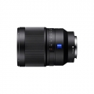
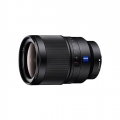
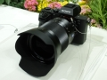

器材库 > 35mm画幅AF定焦镜头 > Distagon T* FE 35/1.4 ZA

详细规格
镜头类型
广角镜头
发布日期
2015-03-04
厂家推荐价格
9,999.00 （人民币）
焦距
35mm
最大光圈
f/1.4
最小光圈
f/16
镜头结构
12片/8组
非球面镜片
3片
光圈叶片
9片
最近对焦距离
30cm
最大放大倍率
0.18倍
滤镜口径
72mm
镜头卡口
Sony E
防抖
否
颜色
黑色
尺寸
约78.5 x 112.0mm
重量
约630g
liusm12342016-07-05 17:064.92 分
操作性 5.00耐用性 5.00性价比 4.50解像力 5.00色彩还原 5.00机械结构 5.00
青青大葱2015-08-17 13:034.83 分
操作性 5.00耐用性 5.00性价比 4.50解像力 4.50色彩还原 5.00机械结构 5.00
ravparty2015-07-15 12:544.75 分
操作性 5.00耐用性 5.00性价比 4.00解像力 4.50色彩还原 5.00机械结构 5.00
wingszero2015-06-15 14:53
RX102015-04-26 20:594.58 分
操作性 5.00耐用性 4.50性价比 4.50解像力 4.50色彩还原 4.50机械结构 4.50
珍珠做的贝壳2015-04-09 15:57
产品图 / 样片


评测 / 相关文章
相关文章
- ［试用］人文大眼睛 索尼FE 35mm F1.4 ZA评测 （存档）
- ［资讯］蔡司T* FE 35mm F1.4 ZA （存档）
- ［试用］大眼睛扫街小品利器 索蔡FE35/1.4 ZA （原站已下线）
- ［资讯］小身材也有大能量 索尼微单选购全攻略 （原站已下线）
- ［试用］人文大眼睛 索尼FE 35mm F1.4 ZA评测 （原站已下线）
- ［资讯］蔡司T* FE 35mm F1.4 ZA （原站已下线）
- ［资讯］小身材也有大能量 索尼微单选购全攻略 （存档）